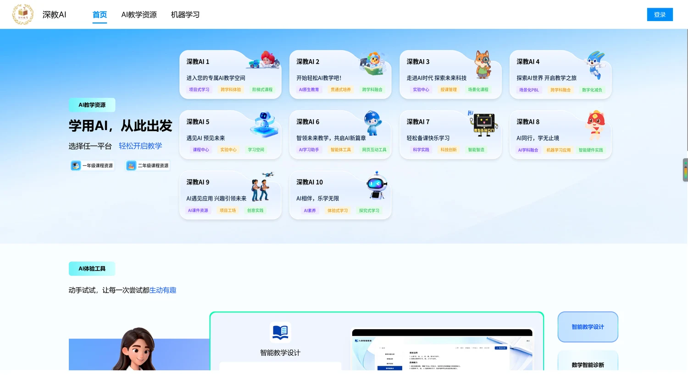
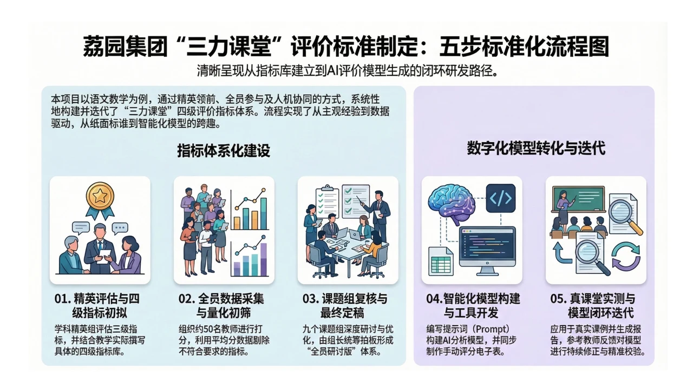

1 · Practice
How do different groups support teachers?
TEACHER AGENCY · PRACTICE & RESEARCH
Helping teachers build AI learning agents and decide how to use them.
OUR QUESTION
AI can guide students and give feedback. Teachers need to decide what it should do.
How do different groups support teachers?
What do teachers learn as they build and use AI?
1 · PRACTICE / THE PROGRAMME
teachers reached across four Shenzhen districts and partner schools
Prompts and first agents
Subject communities and multi-agent workflows
Design traces and sustained engagement
Each round helped us plan the next round of teacher development.
1 · PRACTICE / SHENZHEN MUNICIPAL EDUCATION BUREAU
Shenjiao AI brings together 10 approved learning platforms.
Three city contests drew over 2,000 teachers.

Lesson to shareGive teachers access to tools—and chances to build with them.
1 · PRACTICE / PINGSHAN DISTRICT EDUCATION BUREAU
Move from writing prompts to building teaching agents.
In an English class, AI gives feedback. Teachers set the standards.

Lesson to shareHelp teachers build AI support and decide how to use it.
1 · PRACTICE / LIYUAN EDUCATION GROUP, FUTIAN
Experts draft indicators. Teachers rate them. The team finalizes the set.
Turn the criteria into an AI analysis tool. Try it in class and use teacher feedback.

Lesson to shareInvolve teachers in the standards that guide AI.
1 · PRACTICE / ENGLISH · TEACHER LUO MIN
Help the teacher create speaking tasks.
Act as an AI speaking examiner.
Match activities to the criteria.
Use learning data to give feedback.

Lesson to shareStart with the teaching method. Then give AI clear roles.
1 · PRACTICE / A CLASSROOM EXAMPLE

Support inquiry and improve the design.
Set the kind of help the agent can give.
Explain their ideas and make a judgment.
AI supports the task. Students still do the thinking.
2 · RESEARCH / THE EVIDENCE BASE
teacher groups studied in Pingshan
Agents, workflows and design changes
Platform logs and patterns of use
Surveys, presentations and interviews
These data tell us about teacher learning. They do not prove gains in student learning.
2 · RESEARCH / FINDING 1
Teachers explain their choices in a design. They can then test it and change it.
Define the agent’s role, steps and limits.
See what it does. Discuss it. Improve the design.
Study what teachers build, as well as what they say. This gives us a view of AI-TPACK in practice.
2 · RESEARCH / FINDING 2
Build and revise
Look and explore
Take little part
Training alone does not keep everyone creating.
The studies point to choice, skills, belonging and school support.
2 · RESEARCH / AN EMERGING FRAMEWORK
Is this a good task for AI?
Can the AI do it well? What causes a problem?
Who should make the key decisions?
How do we set the agent’s roles, limits and timing?
A working framework for teacher judgment. Still under development.
2 · RESEARCH / DESIGN IMPLICATIONS
Ask students to try first.
Ask for peer feedback first.
Pause AI and let the discussion continue.
Teachers need the power to delay, limit or pause AI.
WHAT THIS MEANS FOR PROFESSIONAL LEARNING
Make agents. Try them. Improve them.
Use the work itself, as well as surveys.
Provide time and peer support. Let teachers limit AI.
THE TAKEAWAY
Can teachers decide when AI should step forward—and when it should step back?
 Full evidence, studies and frameworkcocorobo.hk/unesco2026/teacher/
Full evidence, studies and frameworkcocorobo.hk/unesco2026/teacher/